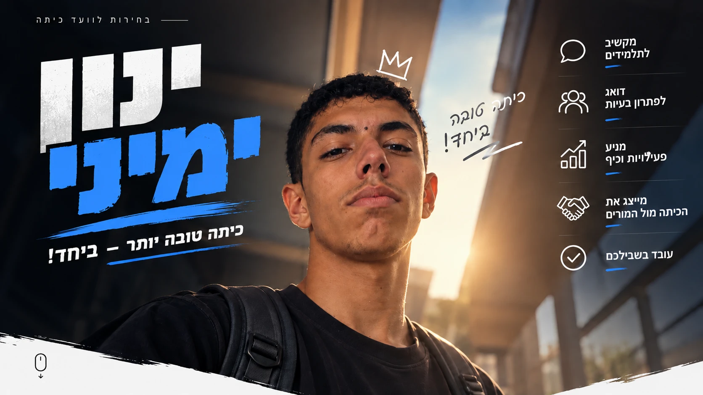
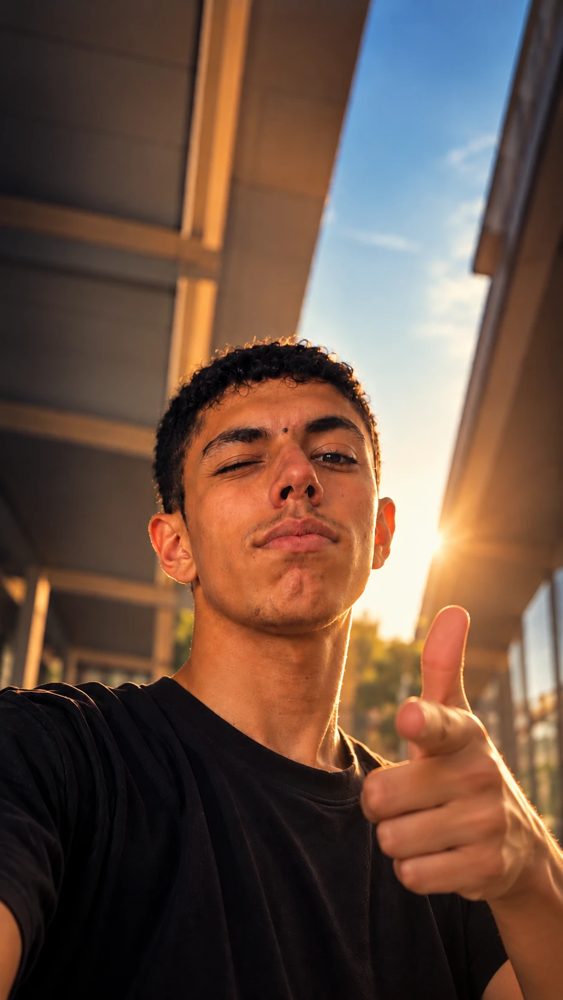

טיולים ואירועים
יותר יציאות ופעילויות שכולם מחכים להן
- מסיבות כיתה וימי כיף
- רעיונות לטיולים שהכיתה תבחר
- חגיגות ימי הולדת לכולם

ארבעה דברים שינון מתחייב לעבוד עליהם
יותר יציאות ופעילויות שכולם מחכים להן
הקול של הכיתה מגיע למורים ולהנהלה
כיתה שבה אף אחד לא נשאר בחוץ
כיתה נעימה יותר והפסקות שכיף לחכות להן
חלקן קצת פחות מציאותיות לחצו על כרטיס כדי לראות איפה זה עומד
חמש שאלות תשובה אחת כנה רמז כל הטיפוסים מצביעים ינון
כל קול חשוב תגיעו להצביע תביאו חברים ובואו נעשה ביחד שנה מעולה

גררו את הפתק של ינון לתוך הקלפי